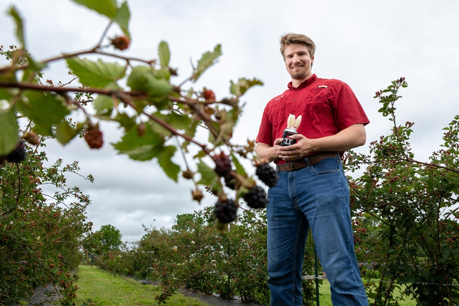
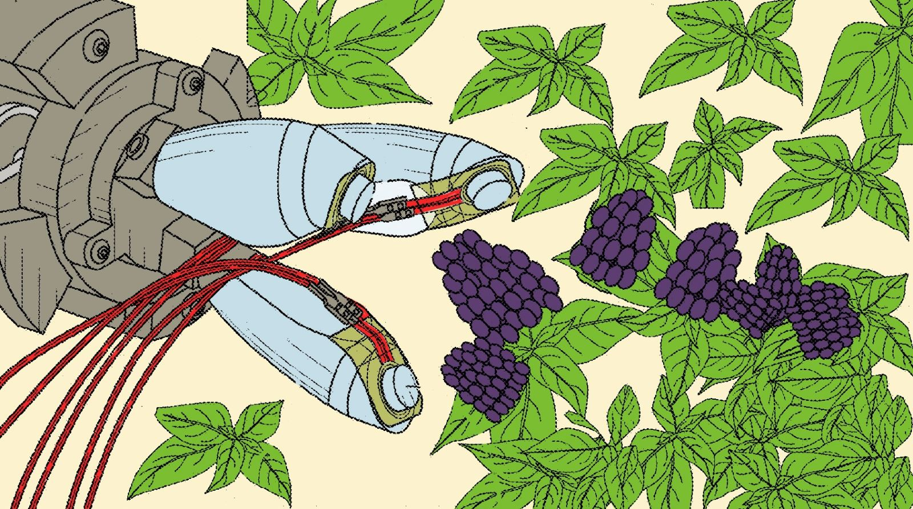
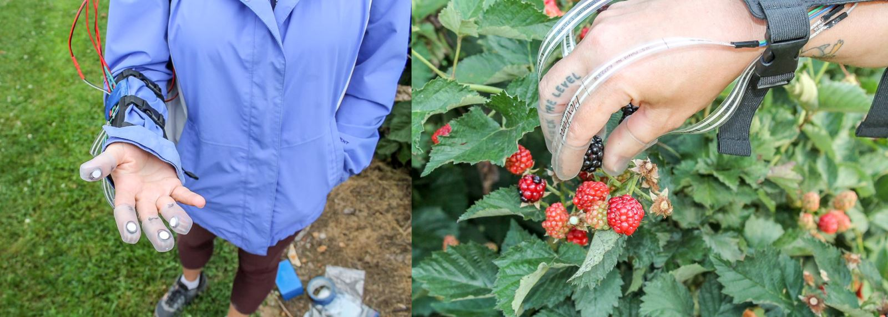

2025年7月21日

摄影：Chieko Hara
机械工程师Anthony Gunderman手持用于采摘黑莓的机器人抓手原型。
新鲜、冷冻和加工浆果在美国是一个价值数十亿美元的产业。仅在阿肯色州，新鲜市场黑莓每年就为该州经济贡献2430万美元。但超市蛤壳包装中销售的这些娇嫩黑莓必须手工采摘，而近年来农场劳动力有限。阿肯色大学开发的新型浆果采摘机器人抓手可以为种植者提供高科技替代方案来解决劳动力短缺问题。
美国专利局于4月向阿肯色大学颁发了”软机器人浆果采摘抓手”发明专利。隶属于研究与创新部门的Technology Ventures获得了该专利。
该设备由Anthony Gunderman开发，他当时是博士生，现在是阿肯色大学机械工程系助理教授，与Yue Chen（前阿肯色大学教授，现在佐治亚理工学院）和Jeremy Collins（当时的阿肯色大学工程本科生）合作完成。
机器人抓手有三个”手指”，每个都由柔软可塑的材料制成。当”肌腱”——在这种情况下是吉他弦——被拉动时，手指会收缩。
用可塑材料制造机器人被称为软机器人技术，这种方法最初在20世纪60年代使用。在设计软机器人时，开发者经常向自然寻找模型，这个过程被称为仿生学(biomimicry)。对于浆果采摘手，研究人员受到郁金香设计的启发。

机器人抓手可以采摘娇嫩的黑莓。（插图由Ross Maute根据Anthony Gunderman的照片着色）
“我受到郁金香花朵在阳光照射下开合方式的启发，”Gunderman说。
每个手指尖端都有一个力传感器，确保抓手能够摘取浆果而不会压碎它。粗暴处理的黑莓可能在收获时受损或收获后变红，这种情况称为红色小核果逆转(red drupelet reversion)。这两种情况对消费者来说都是不受欢迎的特征。美国农业部也会拒绝损伤过多或红色小核果过多的新鲜黑莓。
为了确定采摘黑莓而不造成损伤所需的力量，工程师们与当时的研究生Andrea Myers和阿肯色农业实验站（阿肯色大学系统全州农业部研究机构）食品科学副教授Renee Threlfall合作。
团队在经验丰富的黑莓采摘者指尖安装传感器，测量他们在采摘浆果时施加的力量。
在机器人能够部署到农场之前，仍需要开发计算机视觉和定位技术，让它能够在植物上找到并伸手够到浆果。
如今，蓝莓和梨等较坚硬的水果通常由机器采摘。用于冷冻或加工的黑莓则使用较粗糙的自动化采摘机器。
人手可以适应许多任务。但Gunderman认为有一天机器人手可能会在采摘黑莓方面超越人类。
“当我们谈论一个特定任务时，你当然可以设计出在那个特定任务上比人手更好的东西，”他说。
机器人抓手也可能比人工更一致。
“根据你是否有一个全新的手工采摘者或已经做了几十年的人，你会得到截然不同的浆果质量，”Gunderman说。
抓手还可以用来采摘其他软果，如覆盆子。
机器人抓手在一系列物体上进行了测试，从梨罐头和豆罐头等硬物品到薯片袋和T恤等软而灵活的物品。Gunderman说，软抓手也可能成为因受伤或年龄而行动不便的人的工具。

研究人员测量了在不造成损伤的情况下采摘黑莓所需的力量。（照片由Anthony Gunderman，阿肯色大学和阿肯色大学系统农业部提供）
作为阿肯色州的旗舰机构，阿肯色大学在200多个学术项目中提供具有国际竞争力的教育。
成立于1871年，阿肯色大学通过教授新知识和技能、创业和就业发展、通过研究和创意活动进行发现，同时为专业学科提供培训，为阿肯色州经济贡献超过30亿美元。卡内基基金会将阿肯色大学归类为少数具有最高研究活动水平的美国学院和大学之一。《美国新闻与世界报道》将阿肯色大学列为全国顶尖公立大学之一。了解阿肯色大学如何致力于建设更美好世界，请访问阿肯色研究与经济发展新闻。